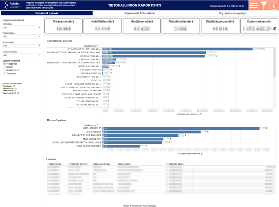
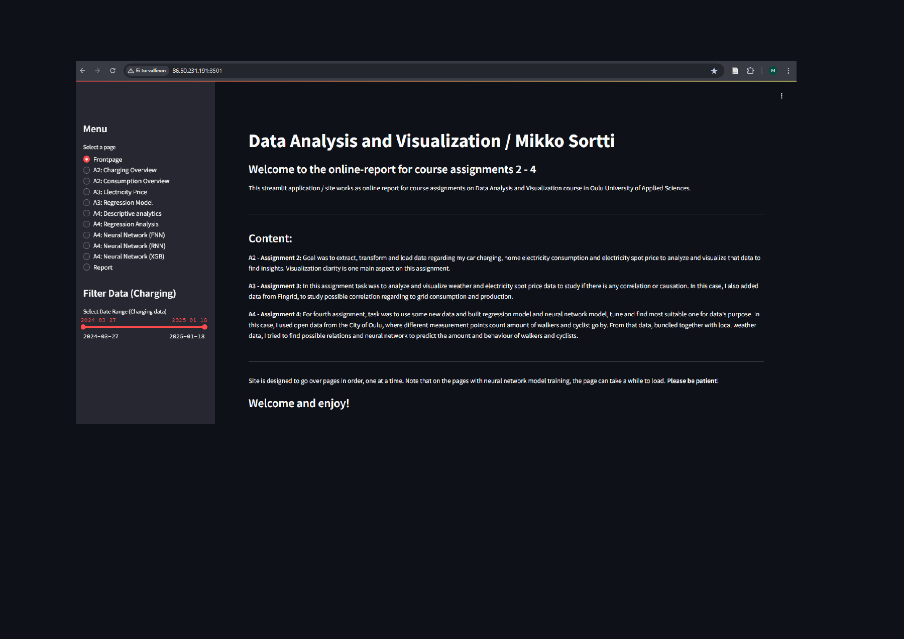
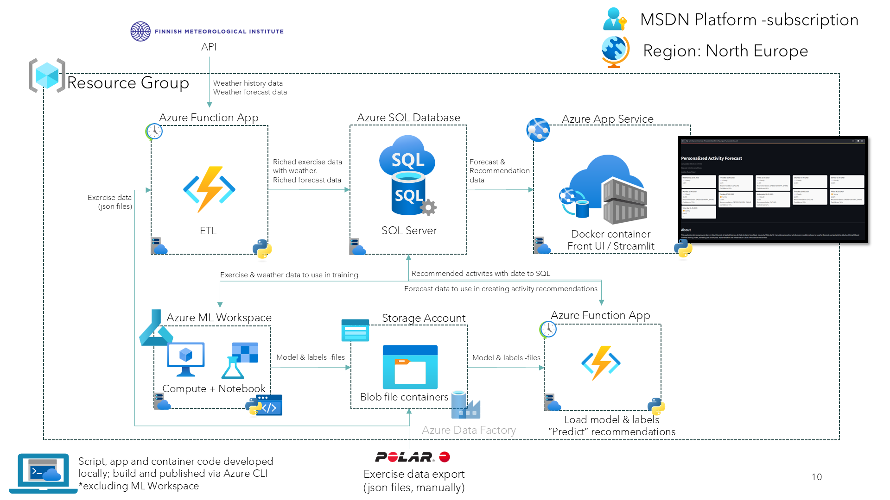
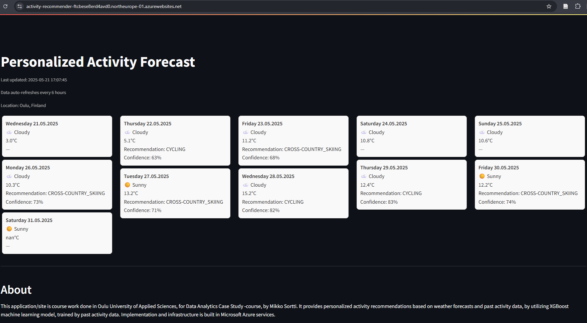
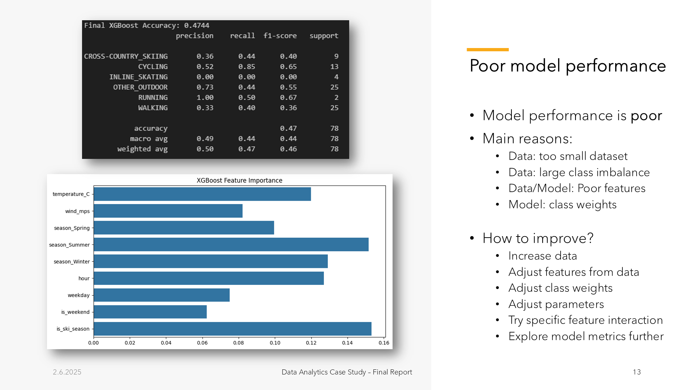
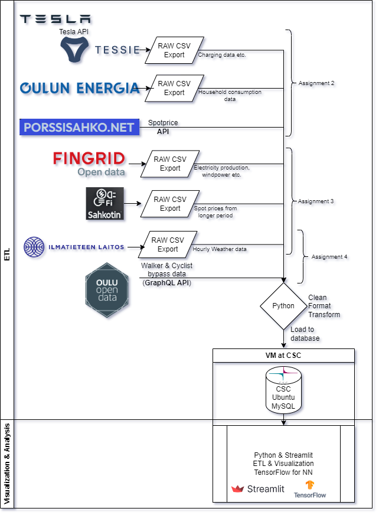
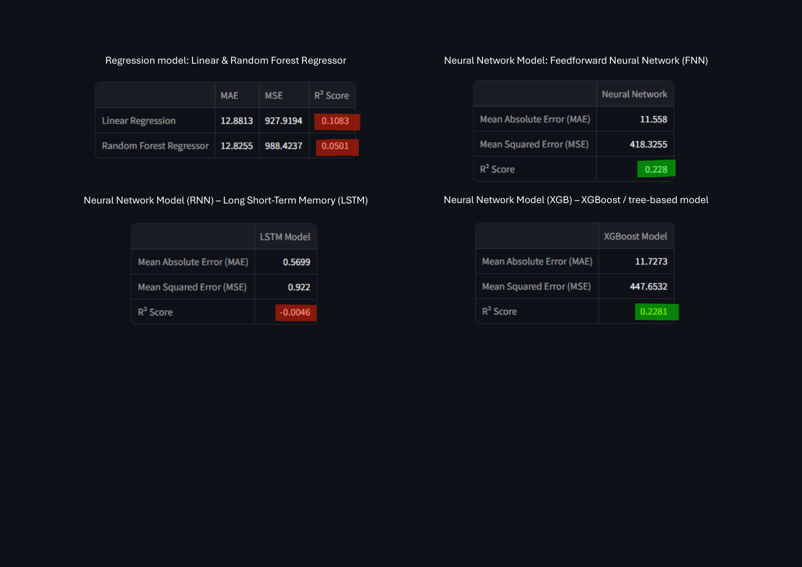

Lead & collaborate
Very strong
- ICT service leadership
- Partner collaboration
- Open communication
- Stakeholder engagement

I’m an ICT and service management professional with a background in operations, leadership and complex public-sector change. I bring people, technology and organisational needs together through open communication, continuous improvement and data-informed decisions.
Interested in the geeky side of things
Skills
Applied in study projects
Self-assessed proficiency · Foundational / Moderate / Strong / Very strong
Selected work
A closer look at how I approach problems.

Master’s thesis · Tableau · Service management
A Tableau dashboard that brings ICT services, assets and costs together, helping managers understand where money is spent.
Read the project story
Python · Streamlit · Data analytics
A Python and Streamlit study project combining household electricity use, EV charging and spot prices to explore contract choices, with additional forecasting experiments.
Read the project story
Microsoft Azure · XGBoost · Python & Streamlit
An Azure proof of concept combining exercise history and weather data with XGBoost to suggest outdoor activities for the coming days.
Read the project storyExperience & education
15+ years across ICT operations and management.
2026–present
Joint information management of the North Ostrobothnia and Lapland wellbeing services counties
Preparing the organisational integration and planning joint information management in line with shared objectives. Leading change within my area of responsibility.
2022–2026
North Ostrobothnia wellbeing services county
Led change across my ICT services area during the preparation, launch and development of the wellbeing services county. Served as owner and steering group chair of a major change programme, enabling its delivery.
2021–2022
Oulu University Hospital
Helped establish extensive ICT cooperation and co-created an information systems map covering functions, municipalities and operating environments. The map supported the preparation of the wellbeing services county and the transition.
2012–2020
City of Oulu · Oulu Digi & Oulu ICT
Designed and introduced a change management process and operating model, and served as Change Manager. Developed end-user device services and managed staff alongside broader ICT service development.
Freelance web design and development (2011–2017), using HTML, CSS, JavaScript, PHP, SQL and WordPress.
Technical advisor and team coordinator at Infocare (2009–2012), technical advisor at Logica (2008–2009), and trainee / web programmer at Softers (2007).
2024–2026
Master of Business Administration
Oulu University of Applied Sciences
Thesis: Building a Tableau dashboard to visualise ICT costs using CMDB data.
2015–2016
Master of Business Administration
Oulu University of Applied Sciences
Thesis: Improving change management in an IT operations organisation.
2005–2011
Oulu University of Applied Sciences · Coventry University
Bachelor’s studies, international exchange and supplementary management and leadership education.
Thesis: Designing and developing a website for a real estate agency.
Notes & perspectives
Technology, services and the things I learn along the way.
Occasional notes on ICT services, data and practical experiments. New writing will appear here.
Beyond the job title
I’m based in Oulu, Finland. A husband, father of two and curious explorer of technology. I enjoy understanding how things work and finding practical ways to make everyday life and work better.
Interested in exchanging ideas or discussing an opportunity? Let’s connect.
Microsoft Azure · XGBoost · Python & Streamlit
Could activity suggestions based on exercise history and the weather help people find enjoyable ways to stay active? During my Data Analytics Case Study course in spring 2025, I explored this idea through a prototype recommending outdoor activities for the next five to seven days.
I developed the concept locally, prepared the data and tested an XGBoost model before building the solution in Microsoft Azure. I also created a Streamlit interface and deployed it in a Docker container using Azure App Service.
The project gave me experience with the whole solution, from data collection and transformation to model training, recommendation generation and cloud deployment. I developed scripts and application code locally and used Azure CLI for deployment. I also used GPT-4o to support development.
I combined exercise history exported as JSON from Polar Flow with historical weather observations and forecasts from the Finnish Meteorological Institute API. Python code in Azure Functions prepared and enriched the data, with Azure SQL Database storing the information needed for training and recommendations.
Azure Machine Learning provided the training environment. Blob Storage held the model and label files, and another Azure Function loaded these files to generate recommendations using forecast data. The Streamlit application displayed the resulting activity suggestions. The architecture diagram shows these services and their connections.
I produced a working proof of concept demonstrating how exercise history, weather data and machine learning could be connected in a cloud application. The project did not establish whether the recommendations increased users’ motivation to exercise.
The reported XGBoost accuracy was approximately 47%. The small dataset, uneven representation of activity types and initial feature choices limited model performance. Further work would require more representative data, better features and evaluation of how useful the recommendations are in practice.
The project strengthened my understanding of how data quality and model design affect the usefulness of a solution. It also exposed practical challenges with weather data availability, database connectivity and Azure SQL performance.
I learned to consider operating costs alongside functionality. Database configuration and availability choices affected both reliability and expenditure, and cloud cost forecasts did not always reflect changes immediately. The final report recorded total Azure costs of €121.77 for 8 May–2 June 2025.
The result remained a learning prototype with a substantial development backlog. Its main value was the experience of designing, implementing and evaluating an integrated analytics environment.


Master’s thesis · Tableau · Service management
ICT cost reports can be difficult to interpret. My master’s thesis explored whether a Tableau dashboard could make these costs easier to understand using data from a configuration management database (CMDB), which records ICT assets and their relationships.
I interviewed IT management stakeholders to understand their reporting needs. I also helped guide the standardisation of ICT service offerings and their definitions in the source system, creating the foundation for meaningful cost reporting.
Working with the service provider, I guided the development and testing of the data integration and data warehouse needed to bring the source data into the report.
I then designed and built the Tableau dashboard, keeping the original problem at the centre of the work: making ICT costs clearer and more transparent across the organisation. Throughout the process, I worked to ensure that the report addressed this need, rather than simply presenting the available data.
The dashboard brings service and asset information into one view. Managers can explore costs by service and organisational unit, helping them see where money is spent and compare different parts of the organisation.
The study found that visualising CMDB data can make ICT costs clearer and support better-informed decisions. A dashboard alone is not enough: the underlying data needs to be accurate, maintained and consistently structured. Historical data also helps build a more useful picture over time.
Ultimately, the organisation needs to act on these insights. Turning potential savings into realised savings requires decisions, concrete changes and follow-through. Clear reporting provides the foundation; the impact comes from putting that information into practice.
Read the thesis on Theseus ↗Python · Streamlit · Data analytics
What can my household’s electricity use and electric vehicle charging reveal about the most suitable electricity contract? During my data analytics studies, I used my own consumption data, contract terms and market spot prices to explore this question through an interactive report.
I built a data pipeline and a Python / Streamlit application as a series of Data Analysis and Visualisation course assignments at Oulu University of Applied Sciences. I collected data, cleaned and transformed it, loaded it into a MySQL database on a CSC-hosted virtual machine, and created interactive analysis views.
I combined household consumption from Oulun Energia with Tesla charging data exported through Tessie and spot prices from electricity market data services. The wider coursework also included Fingrid electricity production and consumption data, Finnish Meteorological Institute weather observations, and City of Oulu pedestrian and cyclist counts.
I visualised household electricity consumption, EV charging and spot prices to understand how my usage patterns affected costs. I used these observations to compare contract options and assess which type of contract would suit my existing consumption habits.
The focus was on making the analysis useful for a real household decision. Contract suitability depends on both the price structure and when electricity is used, including the timing of EV charging.
In a separate part of the coursework, I combined Oulu pedestrian and cyclist counts with local weather data to practise building and evaluating prediction models. I experimented with linear regression, random forests, feedforward neural networks, an LSTM recurrent neural network and XGBoost, a tree-based model.
I compared model outputs using mean absolute error (MAE), mean squared error (MSE) and R². The reported R² values were modest, highlighting the limits of the models and the importance of evaluating predictive performance. These were learning experiments, rather than validated forecasts for electricity prices or household savings.
The project connected the full analytics workflow: gathering data from several sources, preparing and storing it, building visualisations, and using the results to support a practical decision. It also helped me understand why a more complex prediction model does not automatically produce a better result.
Historical consumption and prices provide useful context for contract choices. Future costs still depend on market prices, contract terms and changes in household consumption, so any recommendation needs to be revisited as those conditions change.

